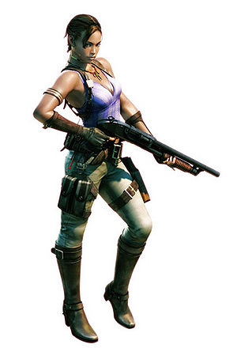

Resident Evil 5
 De: La Frikipedia, la enciclopedia extremadamente seria.
De: La Frikipedia, la enciclopedia extremadamente seria.
De la serie Videojuegos:
Resident Evil 5

Logo del residente del mal.
| Desarrollado por:
|
Negros calvos inc.
|
| Distribuido por:
|
Unos cavernicolas.
|
| Diseñado por:
|
Hunos somvyez con mala hortografya.
|
| Motor
|
El de un avion.
|
| Género(s)
|
Sexo salvaje Como matar a retrasados mentales como tu que se hacen pasar por zombies
|
| Fecha de lanzamiento:
|
10.001 A.C
|
| Modos de juego:
|
Borrachera, Y Solo Aceleracion
|
| Requisitos:
|
Comprarte el juego Y ponerlo en el play.
|
| Disponible en:
|
la calle
|
| Formatos:
|
El de un telefono.
|
| Edades:
|
No recomendado para menores de 2 años, se podrian tragar el mando de la consola.
|
| Puntuaciones:
|
-100/10
|
¡Nunca me ganarás IP anónima!

Los zombies eran tontos, pero tal vez seria porque su alimento se basaba en idiotas.(click para ampliar)
La ultima entrega de Resident Evil (Residencia Maligna) que artos ya de la masacre continua de zombies escasos de inteligencia, deciden apostar por masacrar a pobres africanos (no piratas, ni traficantes) indefensos...
Por lo cual es de Logica que los pobres intenten defenderse con lo que pillen a primera mano: cuchillos, oces, hachas, motosierras...
Los habitantes de la aldea lo que no saben es que sufren de sifilis lombrices muy desarolladas (como las de los perros pero mas evolucionadas y mas violentas) y que eso les produce unos pequeños "boom" craneales, mutaciones controladas con las que podrian hacer bienes comunes como reconstruir chozas y ayudar a gente en peligro horribles y muy violentas con las que quedarian deformados y mutilados tanto externamente como interiormente. Por eso culpan a los "racistas"que acaban de llegar de culpables de todo lo que les sucede.
Mientras tanto un engominado todo chupi Albert Wesker (el malo que arma este cristo padre) quiere ver si esas lombrices son computables con su Virus T , y juguetea como un hijo de perra desquiciado niño con los pobres negritos inyectandoles cosas raras.Ayudado por Stephen Hawking , al que llaman "Irvin" amistosamente, tambien es ayudado por Aria Giovanni que en su INMENSA amabilidad presta dinero a Wesker a cambio de que no revele sus medidas si le sale bien el plan con las lombrices que domine el mundo para ella. Tambien estan metidos en el ajo: La/El tio/tia de la mascara de pajaro que va encapuchado/ada y que lleva los ojos brillantes, la hija de William Birkin, osea Sherry Birkin, y tambien un payaso que no para de gritar y reflexionar.
Despues de hablar de los "afectados" y de los "malosos", nos toca hablar de los locos que disparan a los primero que se les acerca sin preguntar y que se supone que son los buenos porque los malos son sus enemigos "buenos".
Los protagonistas, osea asin, los "buenos", son: Chris Redfield, quien es muy esmirriado y muy cobarde porque siempre porta una pistola consigo envez de combatir cuerpo a cuerpo (como hacen los buenos ciudadanos de la aldea). Tambien le acompaña una tal Lara Croft porque se parece un huevo macho Sheeva que tambien es un poco lanzada al liarse a tiros con gente desarmada y tercermundista. Y despues estan los que yo llamo "Buenos Prescindibles" que son los que palman para que los otros puedan matar a mas.
Un poco mas acerca de los Personajes
Mas informacion sobre los personajes, sus origenes y como consiguieron llegar a esta situacion:
- Chris Redfield: Este tuvo su primer encontronazo con
los violadores devoracarne el virus T en una especie de mansion playboy en noseque sitio. Iva con un escuadron de maniaticos armados, en los que se encontraba Albert Wesker, que po aquellos tiempos ya era un maloso. Despues de ese "pequeño incidente de la mansion playboy", tubo otro encontronazo cuando su hermana querida decide ir a la Antartida y liarse a tiros con un homosexual y su hermana esquizofrenica, Chris que veya alli el negocio, fue para liarse a tiros con los pingüinos de la antartida todo, alfinal entre los dos revientan el lugar. Y ahora que ya a petado el lugar mas frio de la tierra, quiere petar el lugar mas caluroso, Africa.
 Aqui Sheva mostrando sus
Tetas escopeta.
- Sheeva
Palomar Alomar: La gilipoyas que curisamente es mas fuerte que el protagonista, es la que se dirige al publico pervertido, con el cuerpo mas sexy de las de RE, se dice que sus padres los mato a cuchillasos murieron por causa de un BOW, que les metia tentaculos a las personas por el culo, y las llenaba de lombrizisitas, luego se unio a la organizacion anti-bioterrorismo BSSA luego, acompaña a chris durasnte la aventura y nos da la oportunidad de elegirle 3 trajes guarros, que solo le cubren los genitales y dejan ver el bote de sus tetazas
Aqui Wesker posando para la Frikipedia.
- Albert Wesker : La historia de maloso de este es bien larga. Primero en la mansion playboy, decide tomarse
una pastilla que le habia pasado su amigo el Birkin un suero, virus, bote con liquidillo moradito que le habia dado su amigo Birkin, al tomarse esa cosa rara empieza a ver dragon morados escupe lacasitos, obtiene super poderes como: Ultra-Fuerza, Velocidad Sonic, Ojos muy molones color rojito, y tener un pelo suave e hidratado. Despues decide ,liarse a leches con un pobre ruso para robarle todo lo que tiene. Y ahora pretende hacer cosas poco deseables con las lombrices y el virus T.
- Excella Gionne : La Puta de Wesker, se ah implanta silicona ya en todas partes incluidos los ojos (de ahi su color blanco) Invento el Uroboros con intenciones de que Wesker le prestara atencion, luego de tener relaciones carnales con dicho subnormal este le contagia el virus y solo le queda morir, como una deforme criatura.
- Ricardo Irving: Un ex de la BSSA que traiciono a la organizacion para ser el amante de la mujer pajaro, era un retrasado mental con problemas para identificarse su sexo "masculino", por esa razon habla y rie de manera homosexual.
- Jill Valentine: Es la mujer que se disfrasa de pajarraco, luego de sobrevivir a los ataques de Nomebeses se dirige a capturar a espencer pero ya estaba muerto ya que Wesker lo
violó mató, como parte de su plan para dominar al mundo, luego de que se tirara con wesker por un acantilado, para salvar a su amante compañero Chris, reaparece como la mujer gallo pero sin plumas.
- Musulman Extremista: Es un musulman que pasaba por alli adorando a Ala, cosa que no les gusto a los aldeanos. Le pillaron por banda y le hicieron un juicio de los rapiditos, decir que si era inocente, y despues decapitarle. Les deja el hacha manchada de sangre de cojones, lo que hace que se enfurezcan más.
Armas (descubiertas hasta la fecha)
Aqui se mencionaran y describiran las armas que se encuentran en el juego, con las que podras patrullar las calles para una seguridad urbana mejor llevar a un lugar mejor a los pobres africanos...
- Pistola 9mm: Sirve practicamente para juguetear con los aldeanos y operarles la nariz.
- Ak-47: Esta reparte una buena dosis de "realidad" a esos malnacidos infestados de gusanos, y ni te cuento lo que les hace a esas mariquitas voladoras que quieres tirarse tu cabeza.
- Rifle Francotirador: Si os soy sincero, sirve mas para espiar a distancia a los aldeanos y enterarte de los cotilleos. Si lo usas desde el edificio que esta antes del "amiguete leñador" podras escuchar como llora por la perdida de su familia en un "accidente" laboral suyo...
- Cuchillo: ¡¡LA ARMA MAS POTENTE DEL JUEGO!! se te da cuando te pasas el juego en "Modo Freak". Sirve para arreglarles la cara a los aldeanos y volverlos Michaels Jacksons, que no dudan en ayudarte.
- Granada: Esta es para cuando los aldeanos se crean muy sociables y se junten muchos, lo cual es perfecto porque esta arma es expansivamente destructiva. Ademas puedes divertirte mucho tirandolas al aire y ver a que pobre aldeano le cae en su cabeza...
- Puño/Patada Giratoria: Esto varia segun seas el personaje femenino o masculino. Siendo el masculino le pegaras un leñazo en plena geta al enemigo que le aras guapo de golpe. Y siendo el personaje femenino, le pegaras una patada giratoria que le enviara lo mas lejos posible y por el camino ira arrasando con todo lo que se tope.
Enemigos Normalitos...
Aqui se pondran y describiran lo buenos y amistosos que son los aldeanos y compañia:
- Aldeanos (no Ganados supongo): Son muy amistosos, siempre intentan darte un besito de bienvenida, pero de alli donde vienes eso se ve muy "rarito" y le pegas una patada en la boca para que se pire. Suelen esgrimir algun objeto con el que sacudirte por no aceptarles tal y como son. Suelen atacarte con armas muy fuertes como un megáfono o una flor.

El "motosierra" señalandote y diciendote lo mucho que se cotizara esta magna web dentro de 3 años
- Hombre con excelente salud mental que goza de una parla muy culta, alias "el motosierra": Va por el pueblo con su fiel motosierra con la que no duda ni un instante en cortarte la cabeza como señal de venganza por la muerte de su familia. Va encapuchado con una especie de
condon bolsa, no se sabe porque, sera para que la gente que le vea no sepa su identidad. Sin embargo, antes de cortarte la cabeza espera a que lo esquives.
- Palurdo con megáfono: Un marginado que intenta hacerse popular hablando por el pueblo y contando chistes, pero el megáfono también es su única opción defensiva.
- Mariquitas voladoras: Son las lombrices que han aprendido a volar, suelen acercartese a la cabeza y efectuar movimientos extraños que hacen pensar que tambien dan mucho amor.
- Perros violadores: Estos perros se te suben y te arrancan un pedazo de carne luego se te vuelven tirar te tumban y te empiesan a violar.
- Relaciones Publicas de la aldea: Es un hombre encapuchado que porta una hacha de tamaño sorprendentemente grande, que arrasa con todo, y que quiere cojerte para decirte lo buen destino turistico que es la aldea.
- Tonto del Pueblo: Es practicamente igual a los demas aldeanos, solo que muere en circunstancias extrañas y comicas, que hacen pensar en lo cruel que es la vida con algunos...
- Gordo: Aldeano gordo (que mas podia decir) que tiene un brazalete gay y va con toda su masa que ocupa un buen lugar en el espacio a golpearte. defiende las balas con su grasa.
- El Gigante (esto no se traduce al ingles, se dice igual): Es el troll del señor de los anillos, que como vio que se pagaba bien en esto, despues de su exito en Resident Evil 4, se vino aqui. Es lo mas destructivo del mundo, golpea, destruye, mutila, masacra, extermina, vapulea, arroja objetos contundentes, usa objetos contundentes, te pisa la cara, te pega una bofetada con la mano abierta que te viste de torero, y despues te dice que te rindas si dices que no, repite la operacion. Es calvo, gigante (¬¬), tiene una barriga que parece una bolsa de la basura, y anda con gayumbos por todos lados, asin se puede apreciar su perfilado y lubricado cuerpo.
- Grises: Son de una tribu africana que se distinguen por ser de una nueva raza, los grises. Saltan de una altura que te cagas y te sacan toda la vida de un golpe.
- Gris con una mascara fea: Otro subjefe que te avisa antes de atacarte, con lo cual tu puedes esquivarlo sin problemas. Vienen siempre de a parejas gays.
- El mismo de siempre con ametralladora: ¿¿¿Necesitas mas palabras???
- El negro con la gatling: El mismo que aparecia en el RE4, pero con la caja de balas como armadura. A los de Capcom les daba flojera hacerlo distinto.
- Aldeano gigante: Un Aldeano de tres metros que si te acercas pensara que eres una hormiga y te dara una patada luego pega un grito de gallo corre asia ti y te deja vuelto mierda con su chipote chillon
- niñata :es una niña quele sale un bichito que es mas feo que chikito la calsada en pelotas
Jefes Finales (aunque solo es final el del final del juego, los otros solo son monstruos con mucha personalidad)
Aqui pondre los jefes finales o "Bosses" del juego, que son como los gorilas de las discotecas:
- Mutacion de murcielago, escorpion, araña y avispa: Es feo de cojones, y te echa una substancia muy rara a traves de su "cola" que te deja enganchado. Tambien vuela y te pega unas leches. Aparece cuando un aldeano se pasa bebiendo en el bar, coje su camion con el bicho dentro y de despeña contra una montaña, y tu que pasabas por hay quieres ver que tenia el camion...
- Mike Tyson: Este es un jefe oculto, tienes que encontrarlo, nunca esta en el mismo sitio. Siempre golpea con los puños, cada golpe te quita el 50% de la vida.
- Ricardo el calamar mutante: Esta es la malformacion de ricardo cuando se masturba con la jeringa del uroboboros y se la inyecta sin querer se convierte en calamar/coco-abominacion que saca sus tentaculos del agua y te los tira encima luego el monstruo saca su ano y adentro se encuentra Irbin convertido en un boyo de mierda, luego de matartlo este lo expulsa y cae al suelo, luego rie como lunatico y muere
- Albert Wesker : El malo mas malo del juego, la primera vez que te lo encuentras esta caminando por ahí muy tranquilo, pero a lo que ve a Chris le empieza a volver el rencor recordando todo lo le hizo (dispararle, robarle, escupirle, escribir un mal articulo en la Frikipedia sobre él y un monton de cosas que a nadie le importa)entonces en un ataque de rabia empieza a : dispararte , patearte,
violarte, correr al puro estilo Sonic,esquivar balas al puro estilo Matrix , dar super saltos como Mario, llamarte friki y lo peor empezar a hablar de su vida(cuando empieza a hacer esto último tu empiezas a disparar como un idiota para tratar de detenerlo pero es inutil el sigue hablando de lo muy chingon que es y de como mola)al final muere comiendose un misil mientras se bañaba en un volcan(lo normal).
- Jill Valentine: La puta loca que saca sus dos ametralladoras y empieza a remodelarte la cara, esta despues de que wesker la ponga en estado de hipnosis perruno te va a empezar a darte patadas disparar para todos lados darte hostias hasta dejarte sin vida, y tu como el propio huevon rogandole para que se detenga luego la sujetas sheva le da un disparo te montas encima de ella
y te bajas los pantalones le quitas el coso que tiene metido en el cuello y final feliz
Curiosidades
Aqui se hablaran de cosas subrealistas del juego y curiosidades de vez en cuando:
- Barriles, cajas... ¿y fruta?: Si nos resulta raro encontrar municion de casualmente nuestras armas en barriles y cajas de un poblado donde no se usan armas de fuego alguna, mas raro nos debe resultar encontrar municion y granadas dentro de frutas...
- Invulneravilidad casi divina: Puede ser un juego, pero cuando disparas a una persona, sea la persona que sea en toda la cabeza, suele morir no ponerse a menearse y restablecerse como si nada. También cuando disparamos a la rodilla, o cualquier otra articulacion no esperamos que la persona a la que hemos disparado se reincorpore tan campante de nuevo a la batalla como si no ubiese pasado nada.
- Eficacia del calibre: ¡¡Joder!! cuando le metes un escopetazo en la pierna a una persona, esta suele perderla de una manera horrible y muy sangrienta, no que haga como que se resvala y luego intentar darte un beso "gitano".
- Sheva...La propia idiota: Puede estar muy buena y todo pero cuando esta siendo tu acompañante tiene el genio de una hormiga.
- Aldeanos pervertidos: Si eres Chris y le pasas al lado a un aldeano te miran el culo y si eres Sheva Te miran las tetas, ah de ser que los creadores son raritos.
- Parametros Incorrectos Si alguien va a jugar y pone que no pusa nada sobre el Friendlyire(NO quita vida que te ataque un amigo) Le puedes vaciar un cargador a Sheva que si ella le da una patada a un zombie al lado tuya tu mueres.
- Sheva, la amorosa Si Sheva se muere y tu estas al 100% de vida ella usara el ultimo spray de primeros auxilios para cuarte a ti y nada mas terminar un zombie la culea y Chris dice Shevaaaaaaaaaaaaaaaaaaaaaaaaaaaaaaaaaaaaaaaaaaaa ('Tu compañera a muerto)
Observaciones Diversas
Aqui pondreis vuestras observaciones que veais de este juego:
- Artemio : No podriamos decir que este juego es racista, ya que en los ultimos juegos han estado masacrando blanquitos indefensos con armas mas que sobradas de calibre...
Videos de gran interes sobre este videojuego
|
|
 Shooter Shooter
 Terror Terror
 Velocidad Velocidad
 Rol Rol
 Estrategia Estrategia
 Aventuras Aventuras
 Fight! Fight!
 Clásicos Clásicos
 Deportivos Deportivos
 Aventura gráfica Aventura gráfica
 Novela visual Novela visual
 Personajes de videojuegos Personajes de videojuegos
|
Autor(es):
- Artemio
- Veni Vidi Vici
- Ryuzaki lee
- Kenbill
- Sciper-kun
- Mr. Roboto
- Lasso
- Bladguer
- Enx123
- Vladi095
Frikipedia 2005-2016, Licencia
GFDL 1.2 - Extraído por FrikiLeaks